我们一起学习 Kubernetes 的 HELM 工具吧！
在没使用 helm 之前，向 kubernetes 部署应用，我们要依次部署 deployment、svc 等，步骤较繁琐。况且随着很多项目微服务化，复杂的应用在容器中部署以及管理显得较为复杂。helm 通过打包的方式，支持发布的版本管理和控制，很大程度上简化了 Kubernetes 应用的部署和管理。
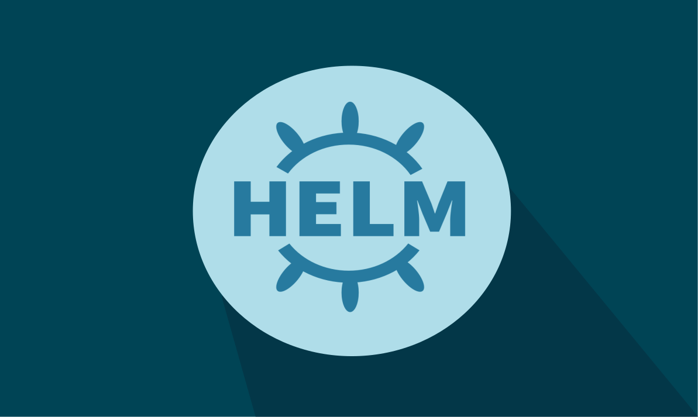
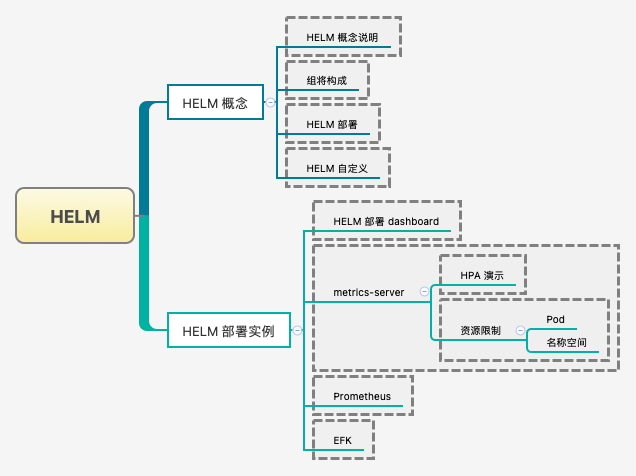
1. Helm 简单了解
学习 Helm 工具的作用和基本概念！
Helm 本质就是让 K8s 的应用管理（Deployment, Service 等) 可配置，能动态生成。通过动态生成 K8s 资源清单文件（deployment.yaml，service.yaml），然后调用 Kubectl 自动执行 K8s 资源部署。Helm 是官方提供的类似于 YUM 的包管理器，是对部署环境的流程封装。Helm 有两个重要的概念：chart 和 release。
chart是创建一个应用的信息集合，包括各种Kubernetes对象的配置模板、参数定义、依赖关系、文档说明等。chart是应用部署的自包含逻辑单元，可以将chart想象成apt、yum中的软件安装包。release是chart的运行实例，代表了一个正在运行的应用。当chart被安装到Kubernetes集群，就生成一个release。chart能够多次安装到同一个集群，每次安装都是一个release。
Helm 包含两个组件：Helm 客户端和 Tiller 服务器，如下图所示:
Helm客户端负责chart和release的创建和管理以及和Tiller的交互。Tiller服务器运行在Kubernetes集群中，处理Helm客户端的请求，与Kubernetes API Server交互。
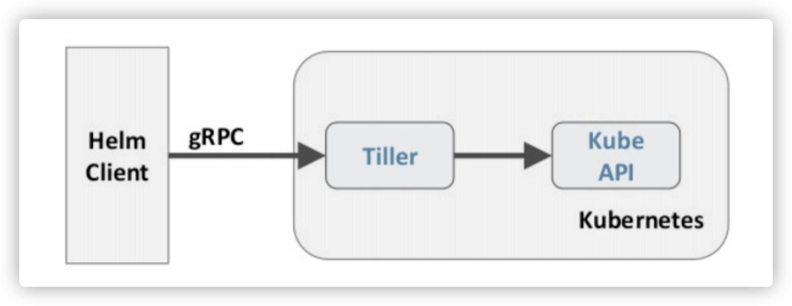
2. Helm 部署方式
服务的部署非常的简单！
- 越来越多的公司和团队开始使用
Helm这个Kubernetes的包管理器，我们也将使用Helm安装Kubernetes的常用组件。Helm由客户端命令行工具helm和服务端tiller组成，Helm的安装十分简单。下载helm命令行工具到master节点node1的/usr/local/bin下，这里下载的2.13.1版本：
# 时间同步
$ ntpdate ntp1.aliyun.com
# 下载安装
$ wget https://storage.googleapis.com/kubernetes-helm/helm-v2.13.1-linux-amd64.tar.gz
$ tar -zxvf helm-v2.13.1-linux-amd64.tar.gz
$ cd linux-amd64/
$ cp helm /usr/local/bin/
为了安装服务端
tiller，还需要在这台机器上配置好kubectl工具和kubeconfig文件，确保kubectl工具可以在这台机器上访问apiserver且正常使用。这里的node1节点已经配置好了kubectl。因为
Kubernetes APIServer开启了RBAC访问控制，所以需要创建tiller使用的service account: tiller并分配合适的角色给它。详细内容可以查看helm文档中的Role-based Access Control，这里简单起见直接分配cluster-admin这个集群内置的ClusterRole给它。创建rbac-config.yaml文件：
# rbac-config.yaml
apiVersion: v1
kind: ServiceAccount
metadata:
name: tiller
namespace: kube-system
---
apiVersion: rbac.authorization.k8s.io/v1beta
kind: ClusterRoleBinding
metadata:
name: tiller
roleRef:
apiGroup: rbac.authorization.k8s.io
kind: ClusterRole
name: cluster-admin
subjects:
- kind: ServiceAccount
name: tiller
namespace: kube-system
# 部署服务
$ kubectl create -f rbac-config.yaml
# k8s中部署tiller组件
$ helm init --service-account tiller --skip-refresh
tiller默认被部署在k8s集群中的kube-system这个namespace下。
$ kubectl get pod -n kube-system -l app=helm
NAME READY STATUS RESTARTS AGE
tiller-deploy-c4fd4cd68-dwkhv 1/1 Running 0 83s
$ helm version
Client: &version.Version{
SemVer:"v2.13.1",
GitCommit:"618447cbf203d147601b4b9bd7f8c37a5d39fbb4",
GitTreeState:"clean"
}
Server: &version.Version{
SemVer:"v2.13.1",
GitCommit:"618447cbf203d147601b4b9bd7f8c37a5d39fbb4",
GitTreeState:"clean"
}
3. Helm 自定义模板
简单介绍我们应该如何创建属于自己的服务模板！
- [1] 创建文件夹
# 用于存放配置文件
$ mkdir ./hello-world
$ cd ./hello-world
- [2] 创建自描述文件 - Chart.yaml
name和version字段必须存在
# 创建版本相关信息的文件
$ cat << EOF > ./Chart.yaml
name: hello-world
version: 1.0
EOF
- [3] 创建模板文件
templates名称是规定的- 在该目录下面的所有
yaml文件都会被执行 - 如果需要部署多个服务，对应文件名称不一样即可
# 用于生成Kubernetes资源清单(manifests)
$ mkdir ./templates
# 创建Deployment文件
$ cat << EOF > ./templates/deployment.yaml
apiVersion: extensions/v1beta1
kind: Deployment
metadata:
name: hello-world
spec:
replicas: 1
template:
metadata:
labels:
app: hello-world
spec:
containers:
- name: hello-world
image: hub.escape.com/library/myapp:v1
ports:
- containerPort: 80
protocol: TCP
EOF
# 创建Service文件
$ cat << EOF > ./templates/service.yaml
apiVersion: v1
kind: Service
metadata:
name: hello-world
spec:
type: NodePort
selector:
app: hello-world
ports:
- port: 80
targetPort: 80
protocol: TCP
EOF
- [4] 安装模板对应服务
# 使用命令创建一次Release
# 当然可以在启动服务的时候指定名称
$ helm install .
- [5] 相关操作记录
# 列出已经部署的Release
$ helm list
# 修改配置文件内容之后可以通过如下命令更新
$ helm upgrade nobby-eel .
# 查看历史信息
$ helm history nobby-eel
# 查询一个特定的Release的状态
$ helm status nobby-eel
# 尝试运行
$ helm install --dry-run .
# 移除所有与这个Release相关的Kubernetes资源
$ helm delete nobby-eel
# 还原删除的helm服务或者回滚已经存在的服务操作
$ helm rollback nobby-eel 2
$ helm rollback nobby-eel 4
# 使用命令移除所有与指定Release相关的Kubernetes资源和所有这个Release的记录
$ helm delete --purge nobby-eel
$ helm list --deleted
上述就已经是一个我们自定义的 helm 的模板了，我们如果将对应文件和目录发送给其他用户的话，其他用户就可以通过命令来启动服务了。但是，上述的配置并不够灵活，比如我们希望控制运行副本数量、资源限制大小等。所以，在下面示例中，我们修改对应配置文件，来进行控制。
- [6] 配置体现在配置文件 - values.yaml
$ cat << EOF > ./values.yaml
image:
repository: hub.escape.com/library/myapp:v2
tag: '2.0'
EOF
- [7] 定义模板文件
# 这个文件中定义的值，在模板文件中可以通过.Values对象访问到
$ cat << EOF > ./templates/deployment.yaml
apiVersion: extensions/v1beta1
kind: Deployment
metadata:
name: hello-world
spec:
replicas: 1
template:
metadata:
labels:
app: hello-world
spec:
containers:
- name: hello-world
image: {{ .Values.image.repository }}:{{ .Values.image.tag }}
ports:
- containerPort: 80
protocol: TCP
EOF
- [8] 改变配置文件对应变量
# 在values.yaml中的值可以被部署release时
# 用到的参数 --values YAML_FILE_PATH 覆盖掉
# 用到的参数 --set key1=value1, key2=value2 覆盖掉
$ helm install --set image.tag='latest'.
# 升级版本(两个都可以)
$ helm upgrade nobby-eel .
$ helm upgrade -f values.yaml nobby-eel .
- [9] Debug 模式
# 使用模板动态生成K8s资源清单，非常需要能提前预览生成的结果。
# 使用 --dry-run --debug 选项来打印出生成的清单文件内容，而不执行部署
$ helm install. --dry-run --debug --set image.tag=latest
4. 实战部署服务 - dashboard
使用 Helm 部署 dashboard 服务！
- [1] 对应配置文件下载
# 下载仓库中的charm到本地
# 包含上述的kubernetes-dashboard.yaml文件
$ helm repo update
$ helm repo list
$ helm fetch stable/kubernetes-dashboard
# 解压对应文件
$ tar -xf kubernetes-dashboard-1.8.0.tgz
$ cd kubernetes-dashboard
- [2] kubernetes-dashboard.yaml
- 在项目目录下面创建如下变量配置文件
- 该文件就类似于自定义模板中的
values.yaml文件 - 用于告诉模板我们自己定义的对应变量是什么
image:
repository: k8s.gcr.io/kubernetes-dashboard-amd64
tag: v1.10.1
ingress:
enabled: true
hosts:
- k8s.frognew.com
annotations:
nginx.ingress.kubernetes.io/ssl-redirect: "true"
nginx.ingress.kubernetes.io/backend-protocol: "HTTPS"
tls:
- secretName: frognew-com-tls-secret
hosts:
- k8s.frognew.com
rbac:
clusterAdminRole: true
- [3] 部署服务操作
- 部署服务完成之后，通过浏览器进行访问会提示不是一个私密连接警告
- 因为谷歌浏览器会对
https进行验证，鉴别真伪与否 - 我们可以给谷歌浏览器中导入我们集群的证书来防止告警提示
- 证书位置:
/etc/kubernetes/pki/ca.crt - 或者通过在谷歌浏览器中输入
thisisunsafe命令来消除警告
# 服务部署
$ helm install stable/kubernetes-dashboard \
-n kubernetes-dashboard \ # 指定创建名称
--namespace kube-system \ # 指定名称空间
-f kubernetes-dashboard.yaml # 指定变量文件
# 查看创建的pod服务
$ kubectl get pod -n kube-system | 'grep dashboard'
# 查看创建的svc服务
$ kubectl get svc -n kube-system | 'grep dashboard'
# 修改配置(配置文件也好)
# 访问对应的(https://192.168.66.10:30324)
$ kubectl edit svc kubernetes-dashboard -n kube-system
- [4] 获取登录 dashboard 的 token 令牌
- 需要通过命令的方式在集群中获取对应令牌信息
# 查看dashboard的token名称
$ kubectl get secret -n kube-system | grep 'kubernetes-dashboard-token'
# 查看登录dashboard的token令牌信息
$ kubectl describe secret kubernetes-dashboard-token-ph5lt \
-n kube-system | grep 'token:'
5. 实战部署服务 - metrics-server
使用 Helm 部署 metrics-server 服务！
从 Heapster 的 github 中可以看到已经，heapster 已经 DEPRECATED。这里是 heapster 的 deprecation timeline。可以看出 heapster 从 Kubernetes 1.12 开始将从 Kubernetes 各种安装脚本中移除。Kubernetes 推荐使用 metrics-server。我们这里也使用 helm 来部署 metrics-server。
- metrics-server.yaml
args:
- --logtostderr
- --kubelet-insecure-tls
- --kubelet-preferred-address-types=InternalIP
$ helm install stable/metrics-server -n metrics-server \
--namespace kube-system -f metrics-server.yaml
- 使用下面的命令可以获取到关于集群节点基本的指标信息
$ kubectl top node
NAME CPU(cores) CPU% MEMORY(bytes) MEMORY%
node1 650m 32% 1276Mi 73%
node2 73m 3% 527Mi 30%
$ kubectl top pod --all-namespaces
NAMESPACE NAME CPU(cores) MEMORY(bytes)
ingress-nginx nginx-ingress-controller-6f5687c58d-jdxzk 3m 142Mi
ingress-nginx nginx-ingress-controller-6f5687c58d-lxj5q 5m 146Mi
ingress-nginx nginx-ingress-default-backend-6dc6c46dcc-lf882 1m 4Mi
kube-system coredns-86c58d9df4-k5jkh 2m 15Mi
kube-system coredns-86c58d9df4-rw6tt 3m 23Mi
kube-system etcd-node1 20m 86Mi
kube-system kube-apiserver-node1 33m 468Mi
kube-system kube-controller-manager-node1 29m 89Mi
kube-system kube-flannel-ds-amd64-8nr5j 2m 13Mi
kube-system kube-flannel-ds-amd64-bmncz 2m 21Mi
kube-system kube-proxy-d5gxv 2m 18Mi
kube-system kube-proxy-zm29n 2m 16Mi
kube-system kube-scheduler-node1 8m 28Mi
kube-system kubernetes-dashboard-788c98d699-qd2cx 2m 16Mi
kube-system metrics-server-68785fbcb4-k4g9v 3m 12Mi
kube-system tiller-deploy-c4fd4cd68-dwkhv 1m 24Mi
6. 实战部署服务 - Prometheus
使用 Helm 部署 Prometheus 服务！
- [1] 组件说明
# 1.MetricServer
是k8s集群资源使用情况的聚合器，收集数据给k8s集群内使用，如kubectl,hpa,scheduler等
# 2.PrometheusOperator
是一个系统监测和警报工具箱，用来存储监控数据
# 3.NodeExporter
用于各node的关键度量指标状态数据
# 4.KubeStateMetrics
收集k8s集群内资源对象数据，制定告警规则
# 5.Prometheus
采用pull方式收集apiserver，scheduler，controller-manager，kubelet组件数据，通过http协议传输
# 6.Grafana
是可视化数据统计和监控平台
- [2] 默认配置修改
# 克隆仓库
$ git clone https://github.com/coreos/kube-prometheus.git
# 进入模板目录
$ cd ./kube-prometheus/manifests
# 修改grafana-service.yaml文件
# 配置使用nodepode方式访问grafana服务
$ vim grafana-service.yaml
apiVersion: v1
kind: Service
metadata:
name: grafana
namespace: monitoring
spec:
type: NodePort # 添加内容
selector:
app: grafana
ports:
- name: http
port: 3000
targetPort: http
nodePort: 30100 # 添加内容
# 修改prometheus-service.yaml改为nodepode方式访问
$ vim prometheus-service.yaml
apiVersion: v1
kind: Service
metadata:
name: prometheus-k8s
namespace: monitoring
labels:
prometheus: k8s
spec:
type: NodePort
selector:
app: prometheus
prometheus: k8s
ports:
- name: web
port: 9090
targetPort: web
nodePort: 30200
# 修改alertmanager-service.yaml改为nodepode方式访问
$ vim alertmanager-service.yaml
apiVersion: v1
kind: Service
metadata:
name: alertmanager-main
labels:
alertmanager: main
namespace: monitoring
spec:
type: NodePort
selector:
alertmanager: main
app: alertmanager
ports:
- name: web
port: 9093
targetPort: web
nodePort: 30300
- [3] 服务部署
# 因为互相连接所以需多启动几次
$ kubectl apply -f ../manifests
# 查看服务
$ kubectl get pod -n monitoring
$ kubectl get svc -n monitoring
$ kubectl get deployment -n monitoring
- [4] 访问 prometheus 服务
prometheus 对应的 nodeport 端口为 30200，访问 http://MasterIP:30200。
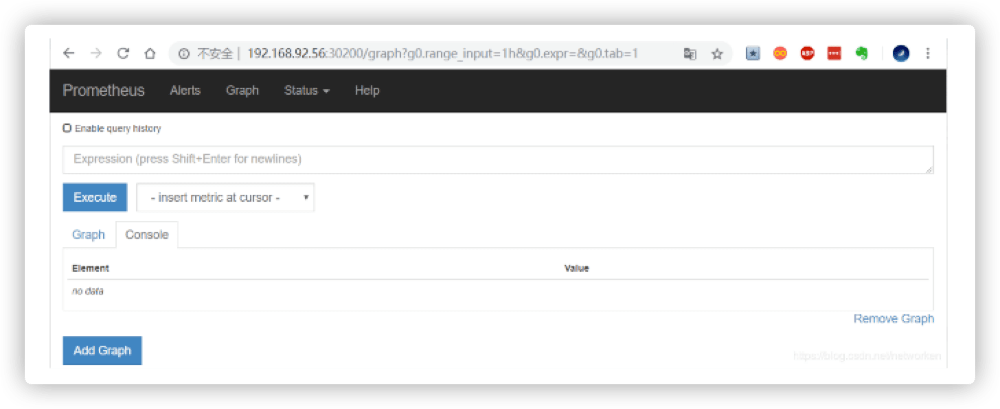
通过访问 http://MasterIP:30200/target 可以看到 prometheus 已经成功连接上了 k8s 的 apiserver。
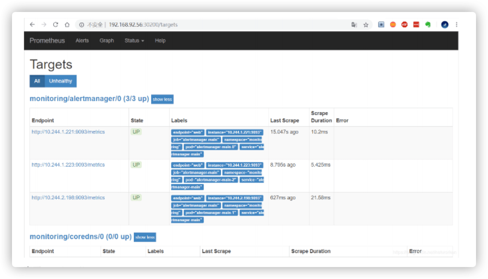
查看 service-discovery。
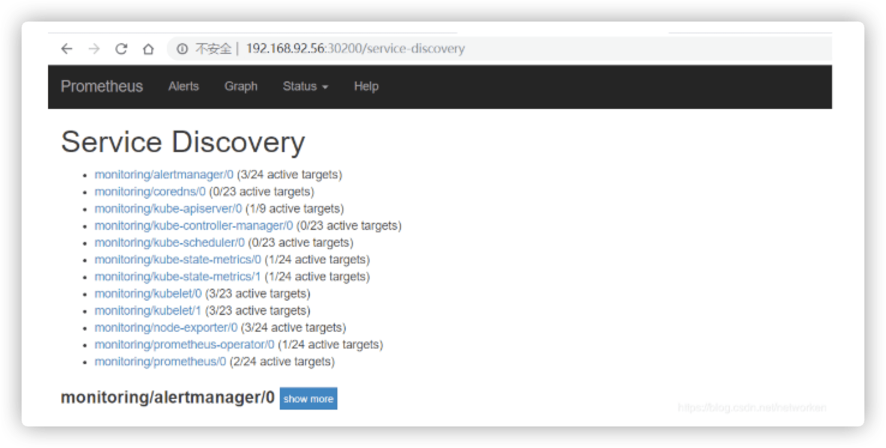
Prometheus 自己的指标
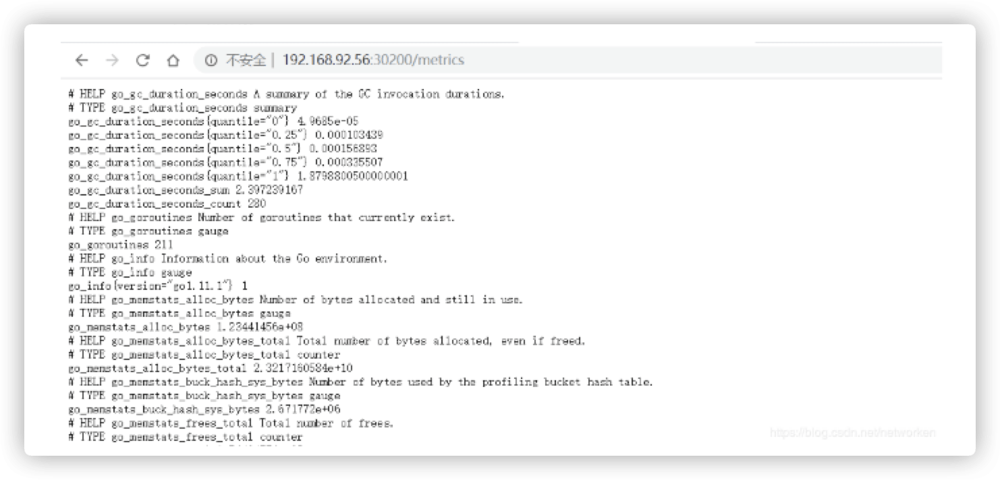
prometheus 的 WEB 界面上提供了基本的查询 K8S 集群中每个 POD 的 CPU 使用情况，查询条件如下。下图的查询有出现数据，说明 node-exporter 往 prometheus 中写入数据正常，接下来我们就可以部署grafana 组件，实现更友好的 webui 展示数据了。
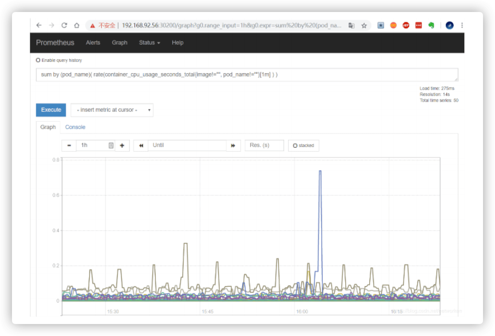
- [5] 访问 grafana 服务
查看 grafana 服务暴露的端口号，如上可以看到 grafana 的端口号是 30100，浏览器访问 http://MasterIP:30100 用户名密码默认 admin/admin。
$ kubectl get service -n monitoring | grep grafana
grafana NodePort 10.107.56.143 <none> 3000:30100/TCP 20h
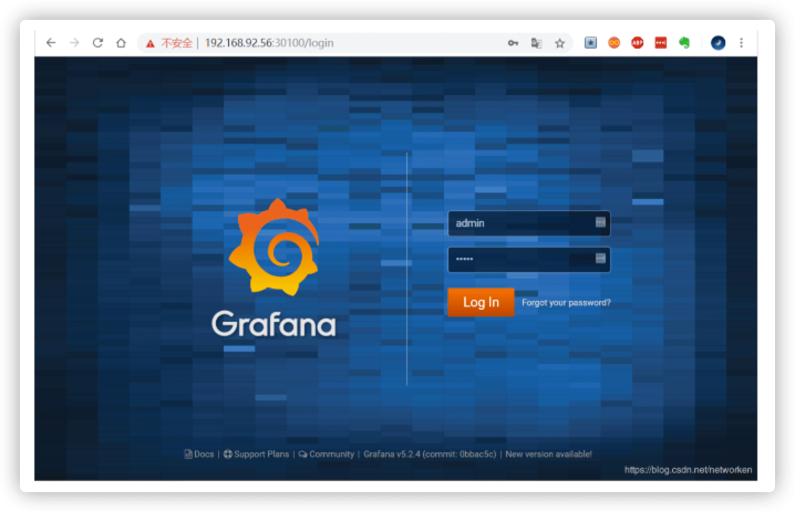
修改密码并登陆。
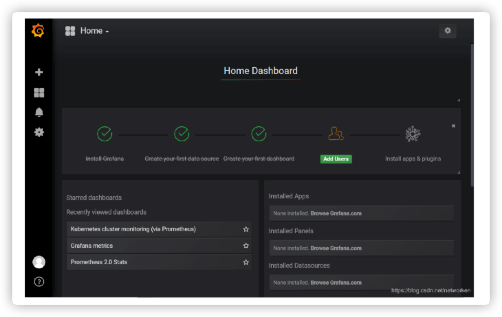
添加数据源 grafana 默认已经添加了 Prometheus 数据源，grafana 支持多种时序数据源，每种数据源都有各自的查询编辑器。
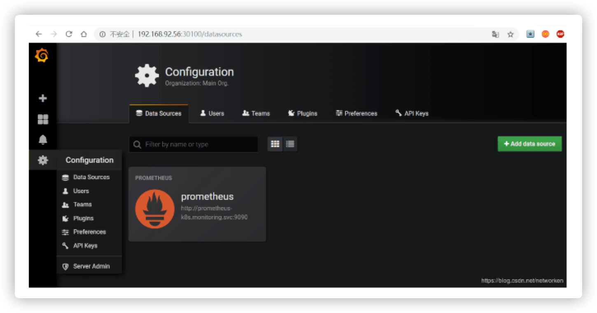
Prometheus 数据源的相关参数。
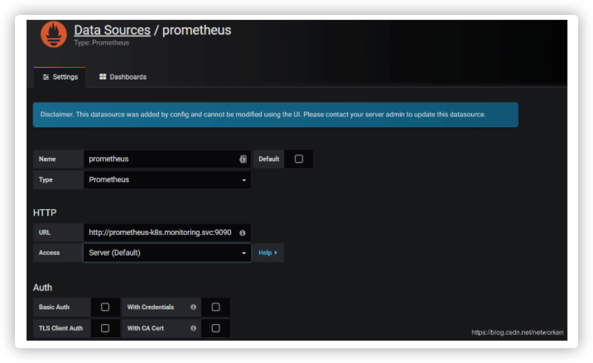
目前官方支持了如下几种数据源。
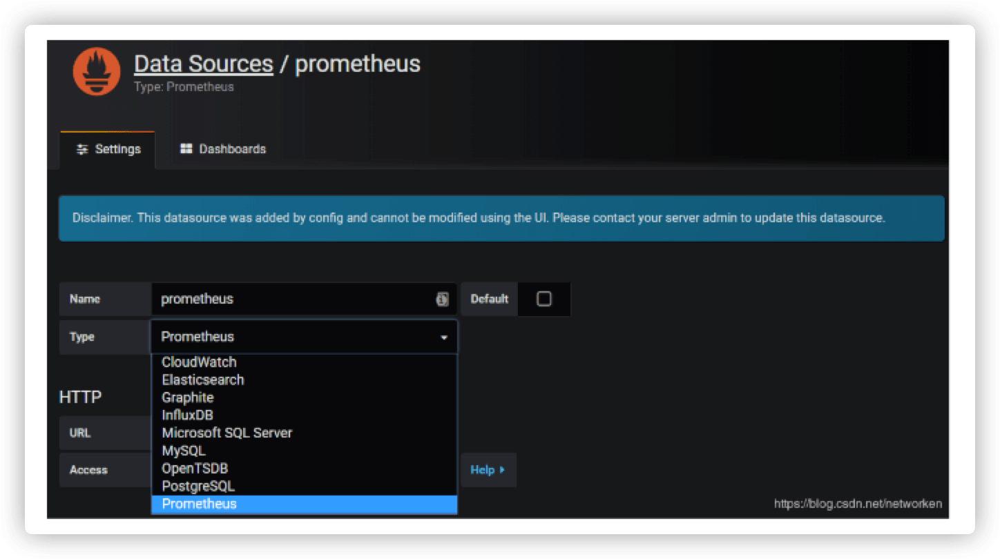
- [6] Horizontal Pod Autoscaling
Horizontal Pod Autoscaling 可以根据 CPU 利用率或者内存使用情况自动伸缩一个 Replication Controller、Deployment 或者 Replica Set 中的 Pod 数量。
# 部署演示资源消耗的示例镜像
# hpa-example: 为谷歌测试资源消耗的php程序
$ kubectl run php-apache \ # 指定名称
--image=gcr.io/google_containers/hpa-example \ # 使用镜像
--requests=cpu=200m \ # CPU限制
--expose --port=80 # 释放端口
# 监控服务
$ kubectl top pod php-apache-xxxxxx-xxxxxx
# 创建HPA控制器
$ kubectl autoscale deployment php-apache \
--cpu-percent=50 --min=1 --max=10
# 监控服务
$ kubectl get hpd -w
# 增加负载并查看负载节点数目
$ kubectl run -i --tty load-generator --image=busybox /bin/sh
# 循环访问服务
$ while true; \
do wget -q -O- http://php-apache.default.svc.cluster.local; \
done
- [7] 资源限制 - Pod
Kubernetes 对资源的限制实际上是通过 cgroup 来控制的，cgroup 是容器的一组用来控制内核如何运行进程的相关属性集合。针对内存、CPU 和各种设备都有对应的 cgroup。
默认情况下，Pod 运行没有 CPU 和内存的限额。这意味着系统中的任何 Pod 将能够像执行该 Pod 所在的节点一样，消耗足够多的 CPU 和内存。一般会针对某些应用的 pod 资源进行资源限制，这个资源限制是通过 resources 的 requests 和 limits 来实现。requests 要分分配的资源，limits 为最高请求的资源值，可以简单理解为初始值和最大值。
spec:
containers:
- name: auth
image: xxxx
imagePullPolicy: Always
ports:
- containerPort: 8080
protocol: TCP
resources:
limits:
cpu: "4"
memory: 2Gi
requests:
cpu: 250m
memory: 250Mi
- [8] 资源限制 - Namespace
# 1.计算资源配额
apiVersion: v1
kind: ResourceQuota
metadata:
name: compute-resources
namespace: spark-cluster
spec:
hard:
pods: "20"
requests.cpu: "20"
requests.memory: 100Gi
limits.cpu: "40"
limits.memory: 200Gi
# 2.配置对象数量配额限制
apiVersion: v1
kind: ResourceQuota
metadata:
name: object-counts
namespace: spark-cluster
spec:
hard:
configmaps: "10"
persistentvolumeclaims: "4" # PVC
replicationcontrollers: "20" # RC
secrets: "10"
services: "10" # SVC
services.loadbalancers: "2" # LB
# 3.配置CPU和内存LimitRange
# default即limit的值
# defaultRequest即request的值
apiVersion: v1
kind: LimitRange
metadata:
name: mem-limit-range
spec:
limits:
- default:
memory: 50Gi
cpu: 5
defaultRequest:
memory: 1Gi
cpu: 1
type: Container
7. 实战部署服务 - ELK
使用 Helm 部署 ELK 服务！
- [1] 添加 Google incubator 仓库
# 添加存储
$ helm repo add incubator http://storage.googleapis.com/kubernetes-charts-incubator
- [2] 部署 Elasticsearch 服务
# 创建名称空间
$ kubectl create namespace efk
# 获取elasticsearch服务
$ helm fetch incubator/elasticsearch
# 安装服务
$ helm install --name els1 --namespace=efk -f values.yaml incubator/elasticsearch
$ kubectl run cirror-$RANDOM --rm -it --image=cirros -- /bin/sh
$ curl Elasticsearch:Port/_cat/nodes
- [3] 部署 Fluentd 服务
# 获取Fluentd服务
$ helm fetch stable/fluentd-elasticsearch
# 更改其中Fluentd访问地址
$ vim values.yaml
# 安装服务
$ helm install --name flu1 --namespace=efk -f values.yaml stable/fluentd-elasticsearch
- [4] 部署 kibana 服务
# 获取kibana服务
$ helm fetch stable/kibana --version 0.14.8
# 安装服务
$ helm install --name kib1 --namespace=efk -f values.yaml stable/kibana --version 0.14.8